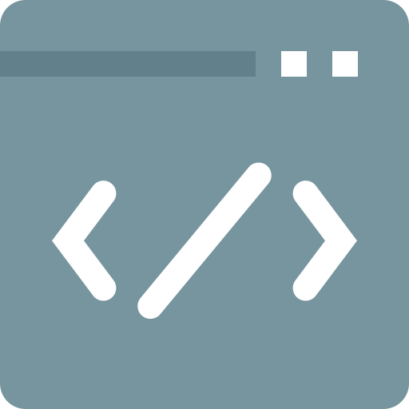

Skills
Front End: JavaScript, React.js, Redux, Enzyme, jQuery, HTML, CSS
Back End: Node.js, MongoDB, Mocha & Chai, Passport, REST APIs 3
Dev Tools: Git, GitHub, Chrome Dev Tools, Heroku, Travis CI
Projects
Match-Er

Front End: React.js, Redux, CSS
Back End: Node, Express, MongoDB, Mongoose, Passport
Match-Er connects nearby tennis players, letting users friend each other, invite each other to matches, schedule matches, and track match scores as well as their overall record.
Building Match-Er presented some challenges. For one, it was the first full stack application I built with React and Redux. At first it was difficult to "think in React." However, it soon clicked, and I realized the incredible benefits of React. Another challenge was Match-Er required a more complicated back end than I had done before. The Express Router was immensely useful in compartmentalizing the code, and Mongoose's subdocuments made constructing and using the data models a smooth process.
Task Timer
Front End: HTML, CSS, JavaScript, jQuery,
Back End: Node, Express, MongoDB, Mongoose, Passport
Task Timer tracks how long users spend doing typical tasks such as checking their email, reading the news, spending time on social media, or studying.
One big challenge I encountered in building Task Timer was, halfway through the project, I shifted the purpose of it. It originally was called "Cube JS," and was a Rubik's cube timer that tracked a user's solve times, provided scrambling algorithms, and kept users' notes on solves. I realized that wouldn't be useful or interesting to most users, so the scope of the app was broadened. I built the timer from scratch with JavaScript, and that was a fun puzzle.
Retro YouTube
Front End: HTML, CSS, JavaScript, jQuery, Three.js, Socket.IO
Back End:: Node, Express, Socket.IO
Retro YouTube plays YouTube videos on a 3D model of a retro television. The user controls the video with a remote that renders when the site is loaded on mobile.
Retro YouTube was the first real web-app I built. It was a difficult challenge to figure out how to display and position a 3D model of a television in the browser as well as rotate the video's iframe three dimensionally with the television. I used the Three.js library to solve those problems. Another challenge was figuring out the functionality of connecting the device displaying the television with the device acting as the remote. I resolved that issue with the Socket.IO library.
Experience
Preservation Distillery
Inventory ManagementOct 2018 - Jan 2019
- Was one of two people in charge of developing a new system for receiving, storing, and tracking incoming units of inventory.
- Upon arrival at company, fixed major issue of disorganized inventory that resulted from the old inventory system.
State Farm Insurance
Staff AssistantAug 2018 - Oct 2018
- Developed leads, identified client needs, and marketed products and services
- Established client relationships and followed up wih clients
- Worked with agent to establish and meet marketing goals
The Stephen Foster Story
Electrician & Followspot OperatorSummer, 2017 & Summer, 2018
- Installed and wired lighting fixtures for productions
- Took over Master Electrician's duties when needed, such as calling and executing cues from the lighting control console
- Was regularly in charge of the lighting crew's practicals and presets
- Aided in developing and executing followspot cues
Schay Advertising
Sales AssistantSeptember, 2017 - April, 2018
- Invoiced clients
- Completed monthly reports for advertiser publishers
- Followed up on overdue invoices
- Earned certification for Google's DoubleClick for Publishers
- Uploaded new advertisements to sites with DoubleClick for Publishers
Education
Thinkful Full Stack Flex Program
Fall, 2018 - Spring, 2019- Learned industry best practices and practical software development standards with a focus on HTML, CSS, JavaScript, jQuery, Node.js, React, Redux, and algorithms & data structures.
- Created and deployed mobile-first applications while learning new languages and frameworks by collaborating several hours every week with a senior web developer.
University of Dallas
Spring, 2017 - Spring, 2018Major: Business
Awards: President's Scholarship
Left to pursue web development
University of Alabama
Fall, 2016Major: Mathematics
Awards: Presidential Scholarship
Transferred to pursue a Business degree